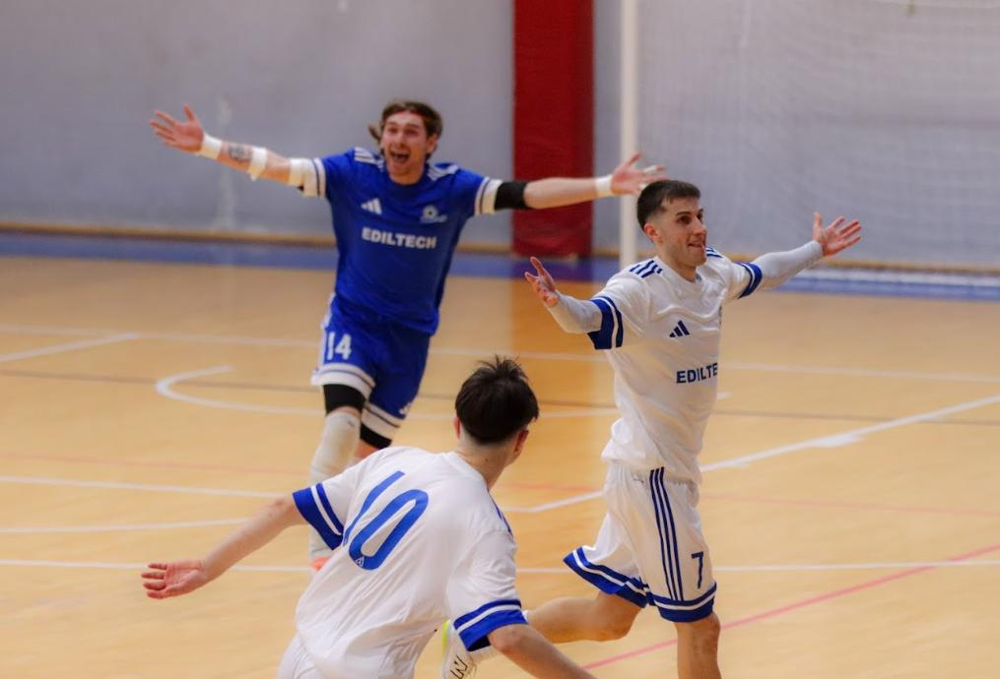

Udine City battuto 3-0 e titolo vinto con una giornata d’anticipo. Gagliarda prestazione difensiva dei seggiolai, sintesi di un’annata di grande costanza
Il Manzano alza al cielo il 7° campionato regionale della sua storia, guadagnando sul campo il diritto di partecipare alla Serie B 2026-27. Udine City battuto 3-0 con una grande prestazione difensiva, l’ennesima di questa stagione. Prestazione di cuore di tutto il gruppo: Genna sblocca il risultato nel primo tempo, poi tanta tensione fino al raddoppio e al tris nati dai piedi del solito Leonardo De Giorgio. Dietro ennesima performance decisiva del portiere Pozzatello.
Grandissimo lavoro della società e dello staff tecnico, capitanato dal duo Andrea Sironi-Alessandro Movio. Il Manzano vince il secondo campionato nell’arco di tre anni, grazie all’ossatura di un gruppo giovane formatosi nell’under 19, e arricchito da innesti mirati.
La squadra ha fatto un percorso di grande costanza e determinazione. Inizio in Coppa, 0-0 deludente con l’Udinese, poi esordio in campionato collezionando un colpaccio in casa dell’Aquila Reale. Segue un testa a testa di sole vittorie di pari passo con il Palmanova. Le due squadre arrivano a Natale con un animo diverso: Manzano scottato dall’eliminazione in semifinale di coppa contro l’Aquila Reale (prima sconfitta dell’anno), amaranto galvanizzati dalla vittoria dello stesso titolo.
Il 2026 inizia con lo scontro diretto tra le due big: successo netto del Palma per 5-2. Manzano che non si perde d’animo e pensa una partita alla volta. Arrivano vittorie in serie, partite tiratissime, soffertissime (citofonare Aquila Reale, Pasiano e Martignacco), con la squadra che acquisisce maturità e rimane in corsa. Il Palmanova che raccoglie due pareggi e cede il passo in classifica. Si arriva allo scontro diretto di una settimana fa, dove il Manzano mette in campo una prestazione enorme e manda il titolo sulla strada di casa. Opera conclusa sabato contro l’Udine City, ora via alla festa.
PRIMO TEMPO – Avvio bloccato, Manzano contratto ed emozionato. Prima chance per l’Udine City con Zuccaccia che calcia da fuori e trova la pronta risposta di Pozzatello. Replicano i padroni di casa: Polidori si gira dal limite e il suo rasoterra termina fuori di nulla.
Ci pensa Genna a rompere il ghiaccio, ben imbucato da Iurlaro si trova a tu per tu con Di Nucci e lo supera con un tocco morbido nell’angolino: 1-0.
Il gol del vantaggio non libera del tutto la mente dei seggiolai che giocano con grande prudenza, faticando a liberare gli spazi in avanti. Udine City che spinge: grossa occasione per Baiutti che riesce a sfondare ma calcia a lato solo davanti a Pozzatello. Ci prova ancora Zuccaccia, Pozzatello attentissimo sul suo palo. Il portiere è poi decisivo su Tullio in uscita bassa.
Il Manzano mette in mostra tutta la sua tenacia difensiva: pregevole il recupero difensivo di Leonardo De Giorgio su Dem in fuga solitaria. Importanti le chiusure di Tancos e Pascale nei pressi della loro area, oltre all’intercetto di Avitabile che neutralizza una ripartenza. In avanti i locali si appoggiano a Leonardo De Giorgio (tiro alto di poco su corner) e Iurlaro, che chiama Di Nucci a una gran parata sul suo palo.
SECONDO TEMPO – Manzano che deve chiudere l’opera al più presto. Inizio forte con i fratelli De Giorgio che cercano il gol su corner. Udine City pericolosissima con Tullio che vince un duello al limite e poi spara fuori di nulla.
Con l’1-0 da difendere sale in cattedra Pozzatello, sempre decisivo nei momenti clou, che neutralizza un tentativo da fuori dei locali con una gran parata in due tempi.
La squadra di Sironi e Movio si scrolla la paura di dosso e spinge: Lorenzo De Giorgio prova la girata e viene deviato. Il raddoppio arriverà dalla bandierina, con Leonardo De Giorgio che calcia forte e teso da fuori, una deviazione difensiva tradisce Di Nucci e vale il 2-0.
Partita che rimane aperta, ancora Leonardo De Giorgio sugli scudi per un recupero difensivo su Zuccaccia che era scappato dopo una palla persa.
In avanti Genna è ispirato e cerca Polidori sul secondo palo, il numero 2 non ci arriva per un pelo anche grazie a un tocco avversario. Ci prova ancora Genna che va via sulla fascia e mette in mezzo per Iurlaro che non appoggia in tempo.
Il tris arriva comunque, sempre con Leonardo De Giorgio, capocannoniere dei seggiolai ad oggi, che indovina l’angolo giusto con il suo classico tiro da fuori.
Il 3-0 rasserena gli animi ma l’Udine City è sempre pericoloso. Damjan Petrovic mette un bel pallone in mezzo per Tullio che divora. Pozzatello si prende la scena con un intervento paranormale: gran volo su Baiutti con la palla che rimane lì, preda di Tullio per un comodo tap-in, ma il portiere ex Palma arriva prima sul pallone con un movimento quasi innaturale.
Sull’altro fronte anche Di Nucci si prende la scena con un miracolo ravvicinato su Klejdi Zharri, imbucato da un passaggio illuminante di Polidori. Polidori pericoloso sul corner seguente, mandando alto un gol già fatto.
Ultimi episodi con l’Udine City in avanti: Pozzatello monumentale nell’uno contro uno con Zuccaccia, che poi sciupa in tandem con l’ex David. Manzano che chiude con un altro cleen sheet, confermando che una buona difesa è fondamentale per la vittoria di un campionato.
Ora un weekend di sosta prima dell’ultima giornata in casa dell’Udinese, squadra in netta ripresa in questo girone di ritorno.